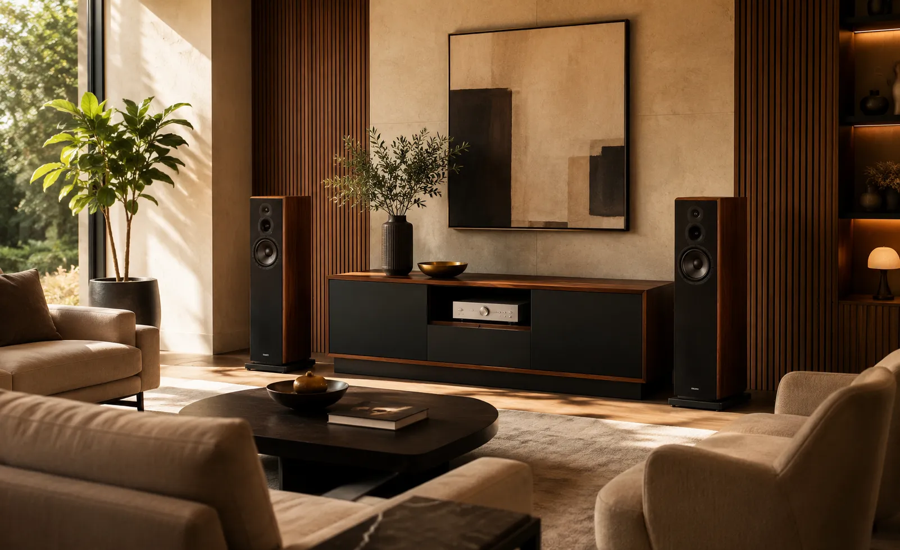
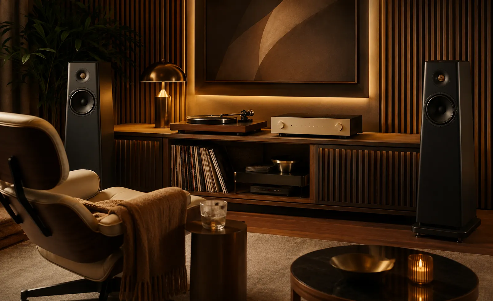
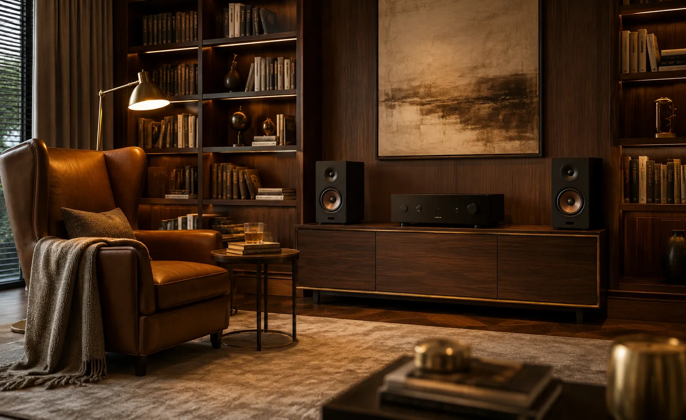
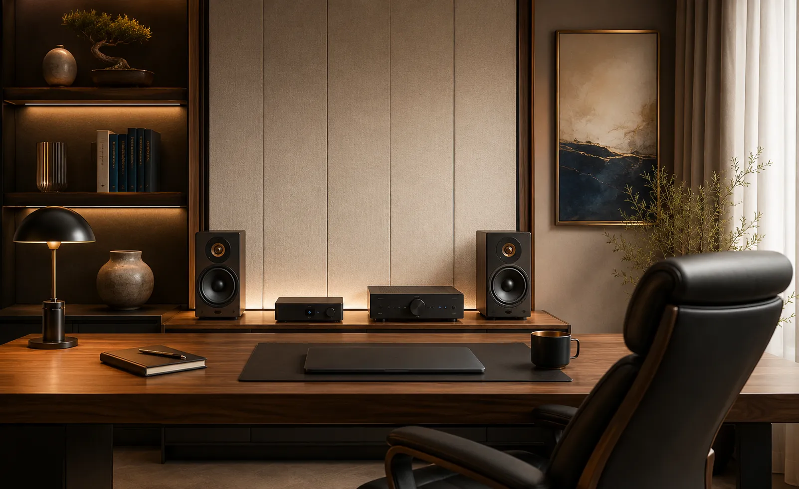
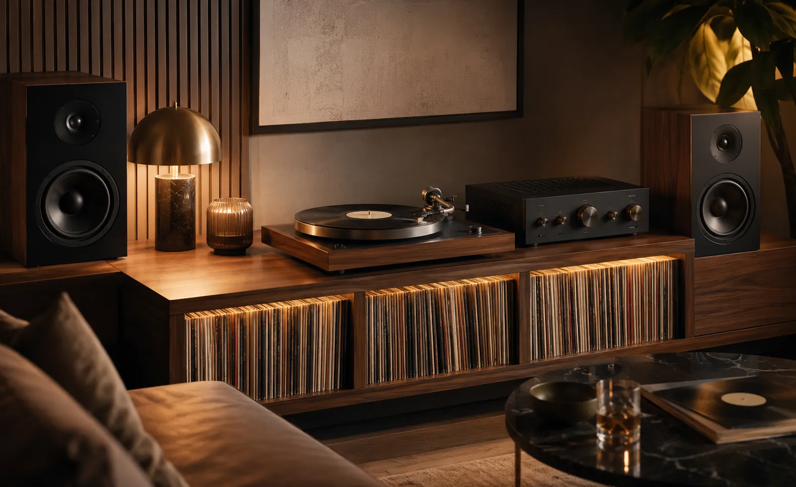
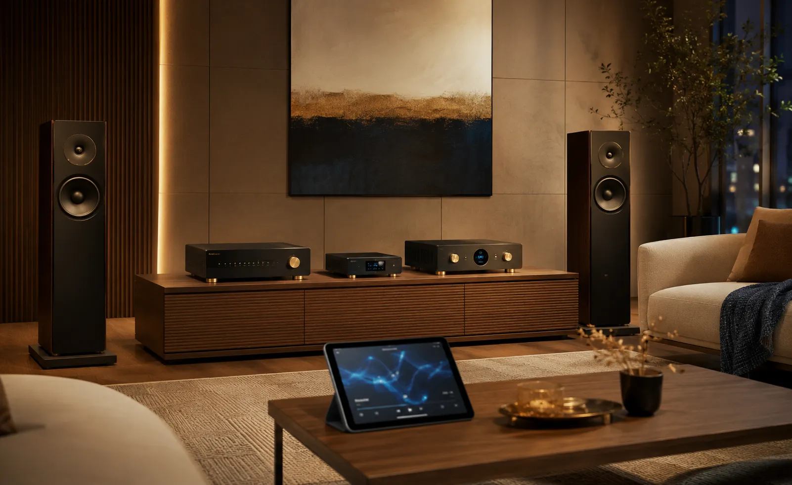

Audio Hi‑Fi para escuchar música en casa con detalle, profundidad y emoción.
Diseñamos e integramos sistemas estéreo de alta fidelidad con bocinas,
amplificación, tornamesas, streaming, DAC, subwoofers, cableado y
configuración.
Consideramos el espacio, tus hábitos de escucha, los equipos
existentes y el presupuesto para construir una cadena de audio equilibrada, fácil de utilizar y
preparada para crecer.
La alta fidelidad comienza con una cadena de audio bien integrada.
DG Audiosound diseña e integra sistemas de audio Hi‑Fi residencial para viviendas en Ciudad de México, Estado de México y proyectos en México. El objetivo es reproducir música con mayor claridad, equilibrio, escena estéreo y naturalidad.
El resultado depende del conjunto: fuente, amplificación, bocinas adecuadas al espacio, cableado, ubicación y configuración. Por eso evaluamos el sistema completo antes de recomendar componentes.
Mayor detalle
Voces, instrumentos y matices con mayor claridad, separación y presencia.
Uso cotidiano
Vinilos, streaming, radio por internet y música digital con una operación sencilla.
Escalable
Comienza con un sistema estéreo coherente y crece hacia DAC, subwoofer o tornamesa.
Ajuste fino
La ubicación, las condiciones del espacio y la configuración influyen en el resultado.
Comprar componentes Hi‑Fi sin compatibilidad puede limitar el sonido desde el inicio.
En audio de alta fidelidad no todo se resuelve comprando el equipo más caro. Una bocina puede no combinar bien con cierto amplificador, una tornamesa puede necesitar preamplificador phono, las condiciones del cuarto pueden reforzar los graves y una mala ubicación puede reducir la escena estéreo.
Por eso es importante pensar el sistema completo: fuente, amplificación, bocinas, espacio, punto de escucha, conectividad y crecimiento futuro. Cuando todo está equilibrado, la música se siente mucho más natural.
Bocinas mal elegidas
El tamaño, sensibilidad y tipo de bocina deben corresponder al espacio y amplificador.
Fuente limitada
Una mala fuente digital o analógica puede reducir detalle, dinámica y claridad.
Ubicación incorrecta
La posición de las bocinas afecta graves, imagen estéreo y profundidad.
Componentes incompatibles
Amplificador, tornamesa, DAC, pre phono y bocinas deben trabajar en conjunto.
Integramos sistemas Hi‑Fi equilibrados alrededor de tu música y tu espacio.
Analizamos tus hábitos de escucha, fuentes musicales, equipos actuales y presupuesto para recomendar una configuración coherente: bocinas, amplificación, tornamesa, streamer, DAC, subwoofer, cableado y ubicación. Este servicio forma parte de nuestras soluciones de audio y video residencial.
Amplificación
Amplificadores integrados, receptores estéreo, preamplificadores y etapas según el sistema.
Fuentes de audio
Tornamesas, streamers, DACs, reproductores de CD, TV o fuentes digitales.
Bocinas Hi‑Fi
Bocinas de piso, repisa, compactas, subwoofers y soluciones estéreo premium.
Instalación y ajuste
Ubicación, conexión, calibración básica, cableado y explicación de uso.
Una solución Hi‑Fi completa, no solo componentes sueltos.
Te ayudamos a construir una cadena de audio coherente para que fuente, amplificación, bocinas, cableado, ubicación y operación trabajen como un solo sistema.
Bocinas Hi‑Fi estéreo
Bocinas de repisa o piso seleccionadas según tamaño de sala, potencia, diseño y nivel de detalle deseado.
Amplificadores integrados
El corazón del sistema: potencia, control, conectividad y carácter sonoro para mover correctamente las bocinas.
Tornamesas y vinilos
Integración de tornamesas, cápsulas, preamplificadores phono y ajustes básicos para disfrutar tu colección de vinilos.
Streamers y DACs
Reproducción digital de alta calidad para plataformas de música, archivos, radio por internet o audio Hi‑Res.
Subwoofers Hi‑Fi
Extensión de graves más profunda y controlada para música, sin perder equilibrio ni definición.
Cableado, rack y soportes
Organización del sistema con cableado adecuado, bases, soportes, racks y estética limpia.
Audio Hi‑Fi para salas, estudios y cuartos de música
Un sistema de alta fidelidad puede integrarse en una sala principal, estudio, biblioteca, cuarto de música o espacio dedicado para disfrutar vinilos y streaming con mayor detalle y comodidad.

Sala principal
Cuarto de música
Biblioteca
Estudio
Zona de vinilos
Streaming Hi‑ResCómo trabajamos tu proyecto de Audio Hi‑Fi
Un proceso claro para entender tu forma de escuchar música, seleccionar una cadena coherente e integrar el sistema en tu espacio.
Nos contactas
Nos escribes por WhatsApp y nos cuentas cómo escuchas música.
Revisamos tu espacio
Analizamos medidas, fotos, muebles, ubicación y equipos actuales.
Definimos sistema
Definimos bocinas, amplificación, fuentes, tornamesa, DAC, subwoofer y accesorios.
Propuesta clara
Te entregamos alcance, equipos, tiempos e inversión.
Instalamos
Realizamos montaje, conexión, organización, pruebas, ajustes y puesta en marcha.
Te capacitamos
Explicamos fuentes, controles y operación básica para que disfrutes el sistema.
No vendemos componentes aislados: construimos una cadena de audio coherente.
En Hi‑Fi, cada eslabón importa. La fuente, el amplificador, las bocinas, el cableado, el mueble, la ubicación y las condiciones del espacio influyen en el resultado. Por eso no recomendamos piezas sueltas sin considerar el sistema completo.
En DG Audiosound buscamos que tu inversión tenga sentido: que suene bien, se vea bien, se use fácil y pueda crecer de forma inteligente.
Una decisión profesional para tu música
- Asesoría personalizada
- Propuesta técnica clara
- Componentes seleccionados para el sistema
- Integración estética
- Instalación profesional
- Ajustes básicos de ubicación
- Capacitación de uso
Marcas profesionales para soluciones de alto rendimiento
Seleccionamos marcas y componentes según compatibilidad, espacio, hábitos de escucha, nivel de desempeño y presupuesto de cada proyecto.
Preguntas frecuentes sobre Audio Hi‑Fi
Respuestas claras sobre componentes, tornamesas, streaming, ubicación y compatibilidad para ayudarte a planear un sistema de alta fidelidad.
Es una cadena de audio diseñada para reproducir música con mayor claridad, detalle, escena estéreo y naturalidad. Puede incluir una fuente, amplificación, bocinas, tornamesa, streamer, DAC, subwoofer y cableado compatible.
Sí. Podemos integrar tornamesa, cápsula, preamplificador phono, amplificación y bocinas. La compatibilidad y los ajustes dependen de los componentes seleccionados y del sistema existente.
Normalmente se necesita una fuente, como streamer o tornamesa, un amplificador, un par de bocinas estéreo y cableado adecuado. La configuración correcta depende del espacio, presupuesto, volumen de escucha y música que disfrutas.
Hi‑Fi prioriza la reproducción musical estéreo; el audio distribuido lleva música a distintas zonas de la vivienda; y el cine en casa integra imagen y sonido envolvente. Los tres enfoques pueden coexistir.
Sí. La distancia a muros, separación entre bocinas, orientación, altura y punto de escucha influyen en los graves, la imagen estéreo y la profundidad. Por eso la ubicación y los ajustes forman parte del proyecto.
Ayudan las medidas y fotografías del espacio, presupuesto aproximado, música que escuchas, preferencia por vinilos o streaming, equipos actuales, volumen habitual y preferencia por bocinas de piso, repisa o una solución compacta.
Construyamos un sistema Hi‑Fi a la medida de tu música
Comparte fotografías, medidas, hábitos de escucha, fuentes, equipos actuales y presupuesto aproximado. Con esa información podremos orientar el alcance inicial.
Hablemos de tu sistema de Audio Hi‑Fi
Podemos orientarte sobre bocinas estéreo, amplificación, tornamesas, streaming, DAC, subwoofers, actualización de componentes e integración con equipos existentes.
Solicita asesoría para tu sistema Hi‑Fi
Completa el formulario y se abrirá WhatsApp con la información del proyecto. Menciona si buscas un sistema nuevo o deseas mejorar componentes existentes.